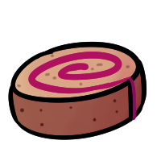

Sweet Berry Swirlcake

Another recipe from Frogsong! This one is for the Sweet Berry Swirlcake, a dessert invented by one of the members of the little frog polycule running the Lost Moth Tavern. It's a tasty and sweet cake with frosting made with real berries!
Ingredients
Frosting
- ¼ cup of blackberries
- ¼ cup of raspberries
- ½ tablespoon of honey
- ½ cup of butter, room temperature
- 1 to 1½ cups of icing sugar
- ¼ teaspoon of vanilla extract
Cake
- 2 large eggs
- 6 tablespoons of sugar
- 2 tablespoons of water
- ½ teaspoon of vanilla extract
- 6 tablespoons of all purpose flour
- ½ teaspoon of baking powder
- ½ teaspoon of cinnamon
How to make it
Frosting
- In a saucepan over medium heat, cook berries and honey together, breaking the berries apart as much as you can.
- Simmer until significantly reduced - until it's about 2 to 3 tablespoons of liquid.
- Remove from heat and let cool.
- Cream the butter together with the cooled berries and half a cup of the icing sugar.
- Mix until completely smooth, then add vanilla extract.
- Add additional icing sugar until desired consistency is reached.
Cake
- Preheat the oven to 375° F.
- Line a shallow baking sheet with parchment paper. Lightly brush melted butter over the parchment paper - this will make the cake easier to remove.
- In a large bowl, beat eggs and sugar until thick and pale yellow.
- Beat in water and vanilla.
- Beat in flour, baking powder, and salt until smooth.
- Pour the batter into the baking sheet and smooth until the batter fills the edges of the pan.
- Bake for 12 to 14 minutes, until golden and springy to the touch.
- Run a knife around the edges of the cake and flip onto a clean dishtowel that's been lightly dusted with icing sugar.
- Peel off the parchment, then starting on a short side, carefully roll the cake up with the towel in the middle and set aside to cool. If you're worried about breaking the cake, you can look up videos on making yule logs - it's essentially the same shape.
- Once the cake has cooled for about 15 minutes, gently unroll it. If it doesn't unroll all the way, don't try to flatten it. This could break the cake!
- Spread a layer of frosting evenly over the entire cake. Feel free to use however much you'd like!
- Gently roll the cake back up, and serve in slices.